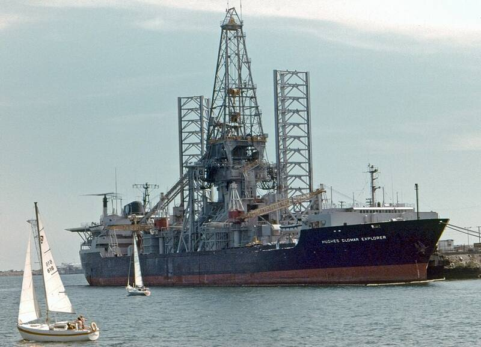

Glomar Explorer home port
Project Azorian, Long Beach

The CIA's disguised recovery ship sailed from Long Beach in 1974 to raise part of Soviet submarine K-129 from the Pacific floor. Confirmed program. 1
Open in the interactive Watcher
Sources
- Glomar Explorer Wikipedia